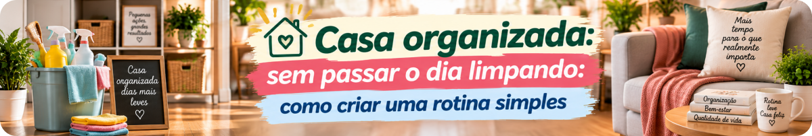
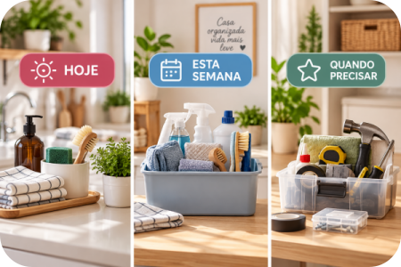
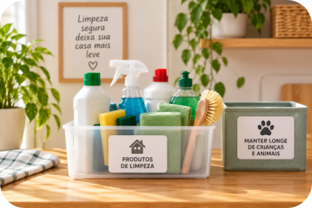

Ter uma casa organizada não significa passar horas limpando todos os dias.
Quando pequenas tarefas vão se acumulando, chega um momento em que parece que a casa inteira precisa ser resolvida de uma vez.
A ideia não é ter uma casa impecável o tempo todo. É evitar que tudo vire uma tarefa enorme ao mesmo tempo.
Uma alternativa é distribuir os cuidados ao longo da rotina, separando aquilo que merece atenção no dia a dia, o que pode ser feito durante a semana e o que só precisa ser realizado quando necessário.
1. Não tente arrumar a casa inteira todos os dias
Uma das maneiras mais simples de tornar a rotina pesada é olhar para a casa como se tudo precisasse ser feito ao mesmo tempo.
Não precisa.
Algumas pequenas ações podem ser incorporadas ao dia a dia: guardar aquilo que saiu do lugar, cuidar da louça utilizada, limpar pequenos derramamentos quando acontecem e deixar os ambientes minimamente preparados para o próximo uso.
São tarefas pequenas, mas que ajudam a evitar acúmulos.
Resolver uma pequena bagunça costuma ser mais simples do que esperar várias pequenas bagunças virarem uma grande.

2. Divida as tarefas em três grupos
Em vez de criar uma lista enorme de obrigações, experimente dividir as tarefas em três grupos.
HOJE
São pequenas tarefas relacionadas ao uso cotidiano da casa. Guardar objetos depois de usar, cuidar da louça, limpar o que sujou durante o preparo das refeições e recolocar algumas coisas no lugar são exemplos.
ESTA SEMANA
Aqui podem entrar tarefas que não precisam necessariamente ser feitas diariamente: limpar determinados ambientes, trocar roupas de cama, cuidar de pisos, revisar o banheiro ou fazer uma limpeza um pouco mais detalhada da cozinha.
QUANDO PRECISAR
Janelas, interior de armários, algumas áreas menos utilizadas e outras tarefas ocasionais podem entrar neste grupo.
E existe uma diferença importante entre “quando precisar” e “nunca”. 😂 Vale manter uma pequena lista para não esquecer aquilo que não faz parte da rotina semanal.
Não existe uma frequência perfeita para todas as casas. Número de moradores, presença de crianças ou animais, tamanho da casa, hábitos e circulação mudam completamente a necessidade de limpeza.
3. Termine pequenas tarefas antes que elas cresçam
Algumas coisas levam poucos minutos quando são resolvidas no momento certo.
Uma bancada utilizada pode ser organizada depois do preparo da refeição. Um objeto retirado do armário pode voltar ao lugar depois do uso. Roupas podem ir para o local destinado a elas em vez de permanecerem acumuladas sobre uma cadeira.
Aliás, quase toda casa parece ter aquela cadeira que misteriosamente se transforma em guarda-roupa auxiliar. 😂
Quanto menos coisas ficam aguardando para serem resolvidas “depois”, menor tende a ser a sensação de que existe uma faxina gigantesca esperando por você.
4. Faça uma coisa por vez
Quando a casa está desorganizada, é fácil começar no quarto, encontrar algo que pertence à cozinha, ir até lá, perceber a louça, começar a lavar, lembrar da roupa...
E, de repente, existem cinco tarefas começadas e nenhuma terminada. 😂
Uma alternativa é escolher um ambiente ou uma tarefa e concluir aquilo antes de partir para outra.
Agora vou organizar a bancada.
Depois vou cuidar da pia.
Depois vou recolher as roupas.
Dividir uma tarefa grande em partes menores pode deixar a rotina mais administrável.
5. Deixe aquilo que você usa para limpar acessível — mas com segurança
Ter os itens necessários organizados pode facilitar a rotina.
Mas facilidade de acesso para um adulto não significa deixar produtos químicos ao alcance de crianças ou animais.
Produtos de limpeza devem permanecer em local adequado e seguro, fora do alcance de crianças e animais e separados de alimentos, bebidas, medicamentos e cosméticos.
Sempre confira também as condições de armazenamento indicadas no rótulo.
O rótulo contém informações importantes sobre finalidade, modo de uso, cuidados e providências em caso de acidentes.

6. Cuidado com a “misturinha milagrosa” da internet
Aqui o Mundo LuFiNas vai ser bem chato. 😂
Vídeos nas redes sociais podem mostrar misturas de diferentes produtos prometendo uma limpeza melhor, mais rápida ou mais barata.
Mas misturar produtos de limpeza por conta própria pode ser perigoso.
A Anvisa alerta que substâncias que são seguras quando utilizadas individualmente e conforme as instruções podem produzir compostos tóxicos quando combinadas.
A Agência cita, por exemplo, que a mistura de álcool com água sanitária pode gerar clorofórmio gasoso.
Não faça misturas caseiras de produtos de limpeza apenas porque viu alguém fazendo na internet.
Use produtos regularizados e siga as orientações do fabricante indicadas no rótulo.
Essa é uma daquelas situações em que uma “dica prática” pode deixar de ser prática e virar um problema.
7. Adapte a rotina à sua casa
Uma planilha pode ajudar.
Um checklist pode ajudar.
Um aplicativo pode ajudar.
Mas nenhum deles conhece sua casa melhor do que você.
Se determinada tarefa precisa ser realizada com maior frequência na sua rotina, ajuste.
Se outra quase nunca é necessária, não existe motivo para fazê-la apenas porque uma lista na internet mandou.
A rotina precisa servir à casa — e não transformar você em funcionário dela.
Uma rotina simples para começar
Se você nunca organizou as tarefas dessa forma, não precisa criar um calendário enorme.
Comece apenas com três perguntas:
O que preciso resolver hoje?
O que quero resolver nesta semana?
O que posso deixar para quando realmente for necessário?
Pronto. Você já começou a criar sua própria rotina.
Checklist da Lu
Antes de transformar o sábado inteiro em “dia da faxina”, experimente:
OBSERVE → PRIORIZE → DIVIDA → RESOLVA → MANTENHA
Não precisa fazer tudo. Faça aquilo que realmente precisa ser feito e distribua o restante ao longo da rotina.
Organização deve facilitar a vida. Não competir com ela.
Não espere a casa inteira ficar bagunçada para começar — mas também não viva limpando uma casa que está sendo vivida.
Casa é lugar de cozinhar, dormir, conversar, brincar, trabalhar, receber gente e descansar.
Organização deve facilitar tudo isso. Não competir com tudo isso.
Para terminar...
Uma rotina doméstica eficiente não é aquela que deixa a casa parecendo cenário de revista durante 24 horas.
É aquela que ajuda você a encontrar suas coisas, usar os ambientes com conforto e impedir que pequenas tarefas se transformem em uma montanha no final da semana.
Comece pequeno.
Uma bancada. Uma pia. Uma cama. Uma tarefa.
Amanhã você continua.
Porque manter costuma ser mais simples do que começar tudo novamente.
Segurança com produtos de limpeza
Use produtos regularizados e conforme as instruções do rótulo. Não faça misturas de produtos por conta própria e mantenha saneantes fora do alcance de crianças e animais e longe de alimentos, bebidas, medicamentos e cosméticos.
Em caso de suspeita de intoxicação, a Anvisa disponibiliza o Disque-Intoxicação 0800-722-6001, serviço gratuito que conecta o usuário aos Centros de Informação e Assistência Toxicológica.
Fontes consultadas
As informações de segurança desta matéria foram verificadas em materiais oficiais da Agência Nacional de Vigilância Sanitária (Anvisa).
Anvisa — Todo cuidado é pouco com as misturas caseiras para limpeza
Orientações sobre os riscos da combinação de produtos de limpeza,
uso seguro e importância de seguir as instruções do fabricante.
Consultar fonte
Anvisa — Cartilha de orientação para os consumidores de saneantes
Informações para consumidores sobre escolha, armazenamento,
utilização e cuidados com produtos saneantes.
Consultar fonte
Anvisa — Disque-Intoxicação
Informações oficiais sobre o serviço de orientação em casos
de intoxicação.
Consultar fonte